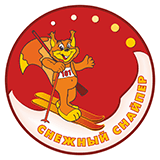

Республиканские соревнования среди детей и подростков по биатлону, лыжному спорту и стрельбе из пневматического оружия «Снежный снайпер» на призы Президентского спортивного клуба - один из самых масштабных и успешных проектов клуба.
С момента своего рождения соревнования заняли лидирующую позицию по массовости участия среди подобных турниров. Ежегодно более 200 тысяч детей со всех уголков Беларуси выходят на старт «Снежного снайпера». Финал соревнований традиционно проходит в Минске. При этом, в турнире участвуют исключительно любители биатлона, лыж и стрельбы.